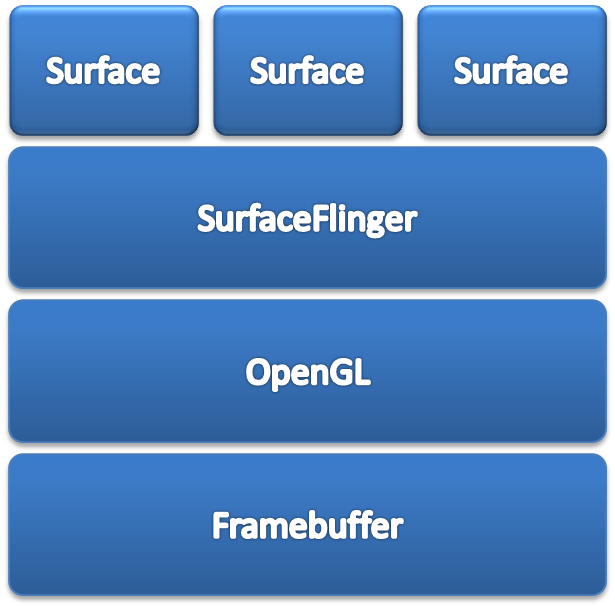

怎样绘制View
关系图

相关方法和变量
- void draw (Canvas canvas)
- 更新视图的方法,调用onDraw
- void onDraw (Canvas canvas)
- 更新视图的方法
- final void measure (int widthMeasureSpec, int heightMeasureSpec)
- 计算画布大小,调用onMeasure
- void onMeasure (int widthMeasureSpec, int heightMeasureSpec)
- 计算画布大小
- final void layout (int l, int t, int r, int b)
- 放置视图,调用onLayout
- void onLayout (boolean changed, int left, int top, int right, int bottom)
- 设置布局(更新子视图时调用)
- void onSizeChanged (int w, int h, int oldw, int oldh)
- 该方法中获取视图的大小